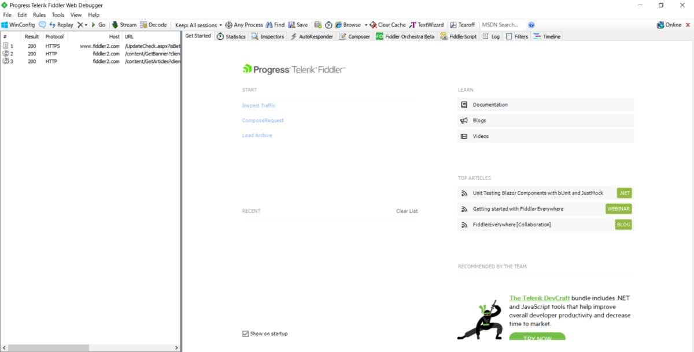

OWASP BWA の WebGoat ~ Http Basic ~
前回立ち上げたOWASP BWAに搭載されているWebアプリのうち、WebGoatを使う。
WebGoatはレッスン形式で実践を通してハッキング手法を学んでいく。順番通り、「Generic」の「Http Basic」から。
いろいろ書いているが、ひとまずテキストボックスに適当な文字列を入力し、「Go」ボタンをクリック。
すると文字列が反転されて表示された。
ここでの演習目的はHTTP通信の基礎と操作、Javaコードの理解らしい。文字列が反転されているのは、公開されているJavaコード内でString型の「person」変数をreverseしているのでまあそうだろなと。HTTPのリクエスト・パラメータを傍受するため、HTTP通信キャプチャソフトをインストールする。
ページではWebScarabを使えと書いているがダウンロードページに行ったら404エラーが返ってきたため、代替品を探した。Fiddlerがよさそう。

ちなみにscoopからインストール可能。
> scoop install fiddler
様々な通信プロトコルを扱えるWireSharkとは違い、FiddlerはHTTP通信に特化している。ブラウザからのリクエストをインターセプトすることなども可能なようだ。
セッション一覧を見やすくするため、「File」タブの「Capture Traffic」のチェックを外し、キャプチャを止めておく。
適当なセッションを右クリックし、「Remove」からの「All Sessions」でキャプチャ履歴を消去する（近くにあるバツ印アイコンの「Remove All」でも可）。
先程の「Capture Traffic」のチェックを有効化する。そして「Rules」タブの「Automatic Breakpoint」、「Before Request」を選択し、ブラウザからリクエストが送信されたときにブレークポイントを貼り、インターセプトできるようにしておく。
再度WebGoatのページから文字列を送信したら、Fiddlerがリクエスト・パラメータを閲覧・改ざんさせてくれる。先程の「Automatic Breakpoint」を「Disabled」に設定しておこう。
ここでは最下段の「person=」の次に表示されている文字列を改ざんしてみる。「unko」を「gero」に変更し、ページ中段の「Run to Completion」ボタンをクリックすることで、改ざんしたリクエストが送信される。
改ざんした文字列が反転されていることがわかる。